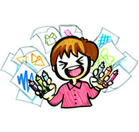
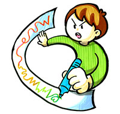
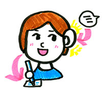
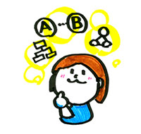
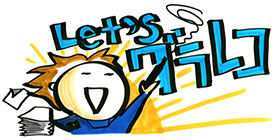
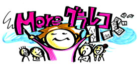
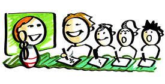

「ヒトの想いを見えるようにしたい、つなぎたい」。
グラフィックレコーディング勉強会のワークショップは、そんな願いをもつ多くの団体・企業から注目されています。
ワークショップは大きくわけて2種類あります。
「グラフィックレコーディングをやってみたい」という方向けの初級編、
「グラフィックレコーディングを活かしたい」という方向けの活用編です。
プログラムを開発しているのは、ワークショップデザイナーやグラフィックレコーダー、プロのファシリテーター。
独自にグラフィックレコーディング習得メソッドを開発しています。
「楽しい！」「続けたい！」という参加者のみなさんに想いを持ち帰ってもらい、毎日の活動につなげられるようなプログラムを提供しています。
ワークショップのポリシーは「習うより慣れろ」「個性をいかそう」「身体で描き、身体で理解せよ」の三つ。
身体をいっぱいに動かしながら、参加者100人100様の個性を活かし、ワクワクするワークショップ運営をモットーにしています。
-

習うより慣れろ！
グラフィックレコーディングは
スポーツ！やればやるほどうまくなる！
-

個性をいかそう
色をどんどん使おう！自分なりの工夫を
しながら進めよう
-

身体で描き、身体で理解せよ
身体全体をつかって、大きな線を書くことで
習得が早くなる。紙の抵抗感を感じて描くと、
線がいきいきする！
グラフィックレコーディング勉強会のワークショッププログラムは、グラフィックレコーディングの基礎スキルを
「聴きとる筋肉」「表現する筋肉」「構造化する筋肉」と定義し、この3つの筋肉を鍛えるワークで構成されています。
参加者の方の要望に応じて、ワーク内容や重点的に鍛えるポイントは様々。
楽しみながら、体系的にグラフィックレコーディングのスキルを身につけることができます。
-

「聴きとる筋肉」
まずは情報を「聴く」
何を話しているのか、
意識して聴きとっていく
-
「表現する筋肉」
聴いたものを「表現する」
聴きとったものをスピーディーに
伝わるイラストや記号で表現する
-

「構造化する筋肉」
表現を「構造化する」
描いた絵や情報の関係性を
とらえ構造化する
グラフィックレコーディング勉強会は、様々な要望をうけワークショップを開催してきた実績があります。
デザインの現場やシステム開発の現場で働く個人、コンサルティングの現場、教育機関、コミュニティ、地域のNPO。
「グラフィックレコーディングをやってみたい！」という方から、「もっと活用してみたい！」という方まで、
多様な立場・要望にお応えできるプログラムを持っています。ぜひあなたにぴったりのプログラムをお選びください。
また、ご相談に応じて、プログラムをカスタマイズすることも可能です。
-

A: [初心者向け] グラレコをやってみよう！ワークショップ (4時間)
グラフィックレコーディングに興味がある、はじめてやってみたい！という方むけのプログラムです。絵を描くのが苦手な方でも大丈夫。ペンの持ち方等、基本から体系的に学べます。グラフィックレコーディングの最初の一歩、仲間と楽しくふみだしましょう！
初級編PDF
-

B: [実践者向け] グラレコを活用しよう！ワークショップ (5時間)
「グラフィックレコーディングというツールをどう活用すると、対話促進、課題解決、場へのエンパワーメントにつなげることができるか？」に興味がある方向けのプログラムです。活用のシーン、目的、その場に必要なグラフィックを描くノウハウを、ファシリテーターと参加者が手を動かしながら考えます。
活用編PDF
-

C: 短縮版 グラレコワークショップ（90分）
教育機関向けのグラフィックレコーディングワークショッププログラム(短縮版 グラレコワークショップ)もご用意しています。